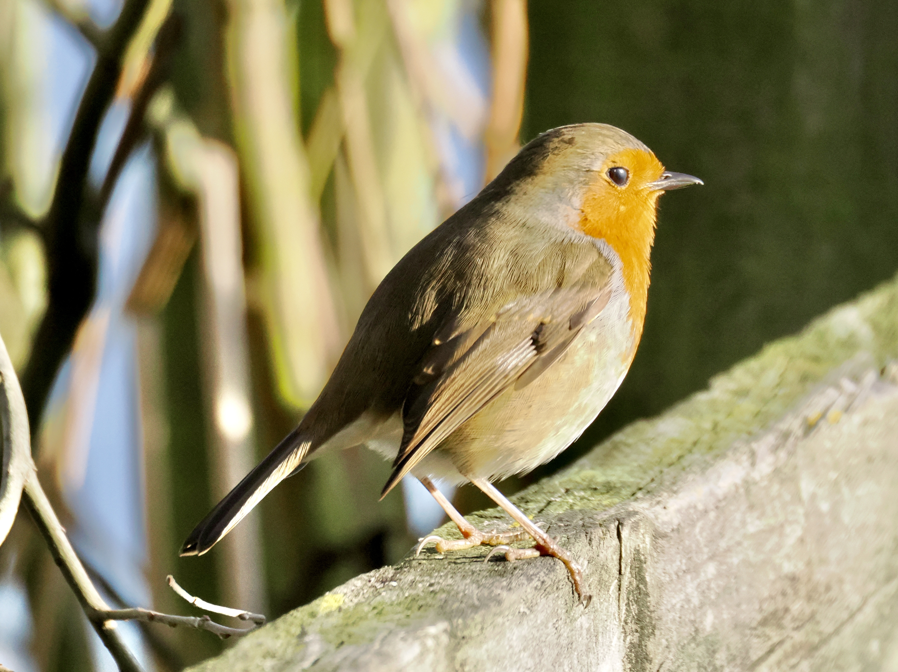
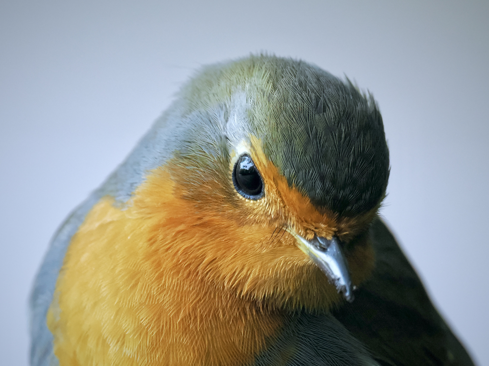
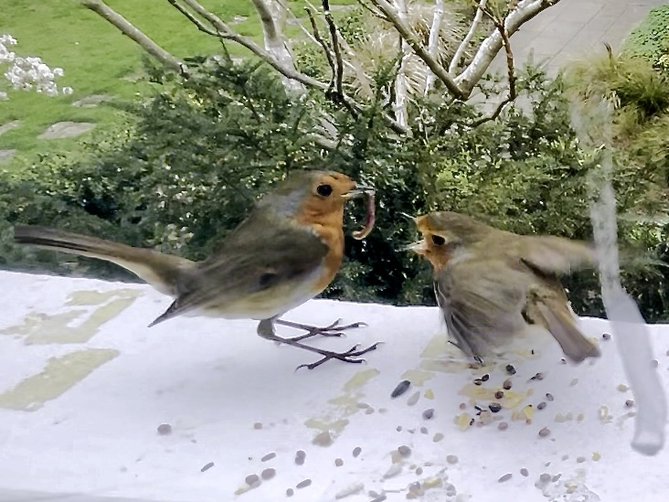

European Robin
Erithacus rubecula
Order: Passeriformes
Family: Muscicapidae

Britain's favourite bird with a distinctive red breast and face. The name Robin is a diminutive of the human name Robert. Back is olive-brown while belly is white. They are quite sensitive to light. I used to feed the birds by the window, and Robins were always the first to show up, even before sunrise. Research also suggests Robins might be able to detect the earth's magnetic field through quantum entanglement in the retina.

Juvenile is speckled and golden. Some believe that Robins are a sign of a loved one's spirit, or of Christmas. Perhaps people like Robins because they are so bold? They are known to follow farmers as they will stir up insects from the field.

Robins are very territorial. What one might hear as birdsong is actually a warning to other robins to stay away. During breeding season though, Robins pair up to nest. One might see courtship feeding, in which a male feeding a female who shakes her wings and makes juvenile calls.